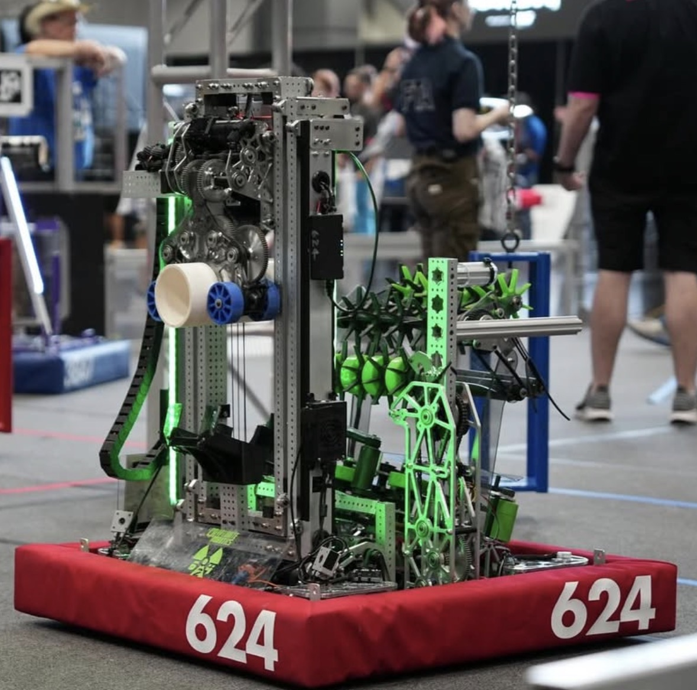
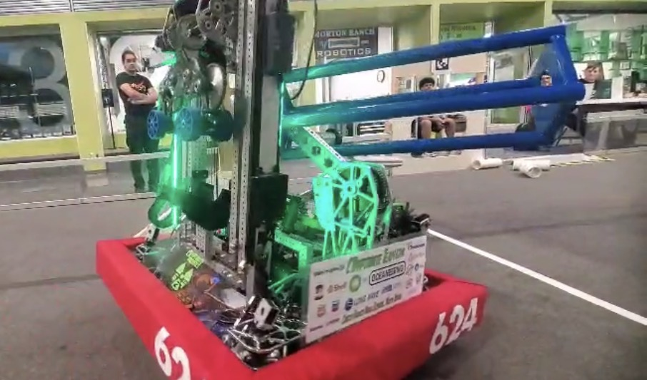
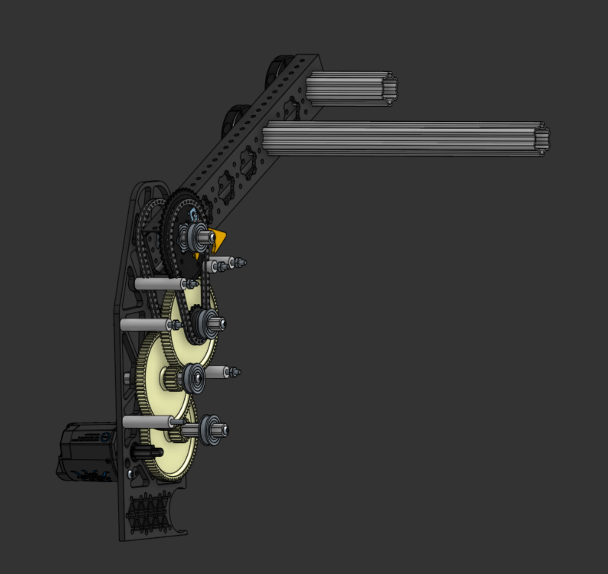
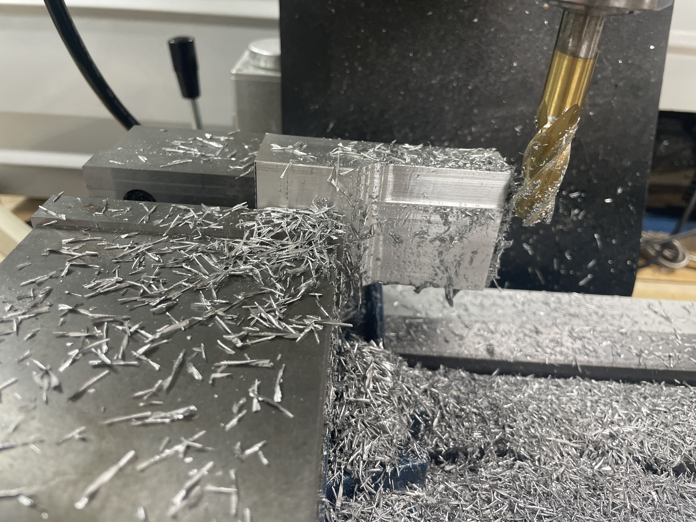

Designing and building robot mechanisms
Project overview
Climb, end-effector, and deflector mechanisms for FIRST Robotics competition robots.
What I did
I designed and iterated mechanisms in Onshape and SolidWorks and helped build and integrate them into the team’s robots.
Team involvement
Alongside the technical work, I served as team president and helped coordinate design, build, integration, sponsorships, and community outreach.


Climb packaging
The climb had to support the 120 lb robot through a short moment arm dictated by the available space. Fitting the assembly alongside the robot’s other mechanisms was a central design constraint.


Custom gearbox and latch
I designed a custom gearbox with a latching mechanism for a highly spatially constrained climb assembly. Load transfer through the gearbox, latch, and supporting structure was a central design consideration.


From design to manufacturing
These projects gave me practical experience taking a mechanical design from sketches and prototypes through CAD, engineering drawings, and manufacturing. I learned to operate a manual mill and lathe, and to create toolpaths and generate G-code in Fusion for a CNC router.
Making parts myself helped me connect design decisions with the work required to manufacture and assemble them. The photo shows a climb part from our 2024 robot that I milled.

